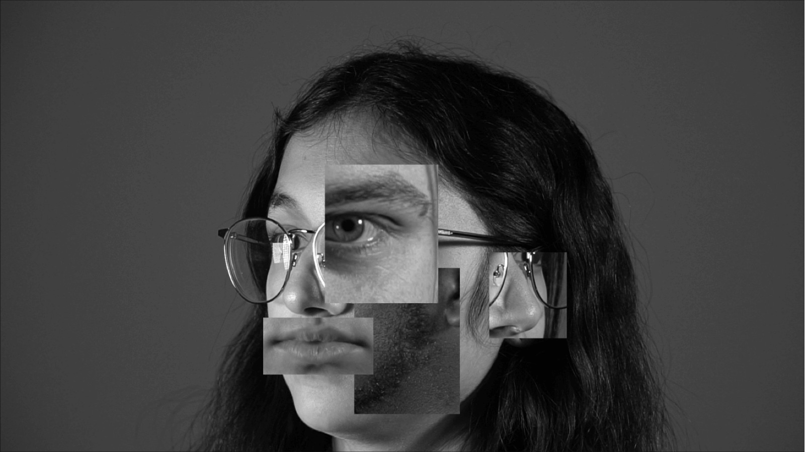
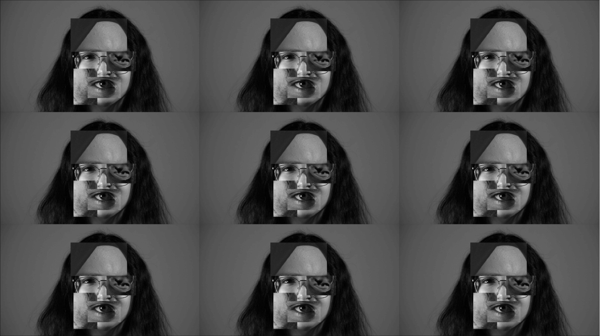
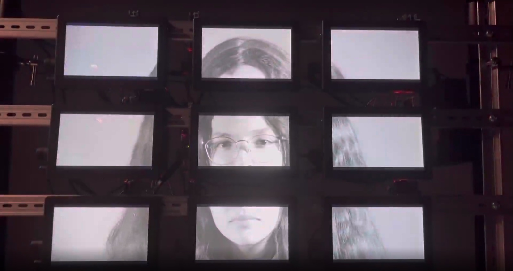
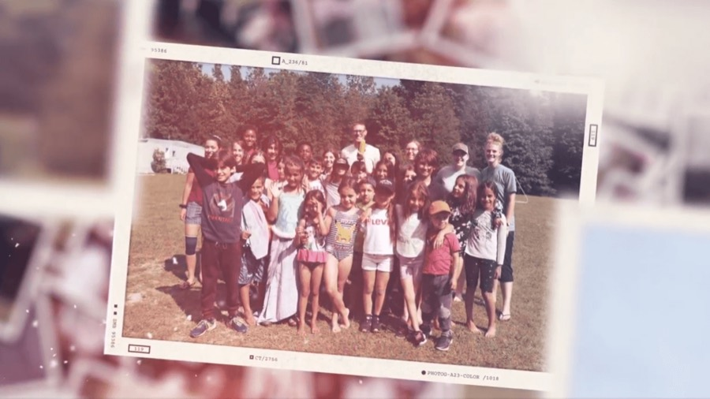

Cliquer pour regarder
Vidéographie
(18/22)
Une obsession vue de l'intérieur : un court métrage psychédélique pensé pour neuf écrans.
Maniac plonge dans l'imaginaire d'un homme à la chemise bleue, obsédé par une fille : un monde chaotique et obsessif. Il a remporté le prix coup de cœur au concours d'essai audiovisuel, en mai 2022 au Centre de la nature.
(Processus)
Les idées et la contrainte qui ont façonné le film.
Destruction et création, chaos, psychédélie. Le film reprend la vision multidimensionnelle des corps du cubisme de Picasso : de nombreux détails du corps et du visage, une ambiance crue, familière et inconfortable à la fois.

La vidéo devait fonctionner sur neuf écrans qui jouent en même temps, mais aussi sur un seul écran standard.


Une musique rapide et rythmée, montée dans FL Studio, appuie le côté psychédélique avec des décors et des costumes monotones. Le montage image a été fait dans DaVinci Resolve.
Images4 photos
